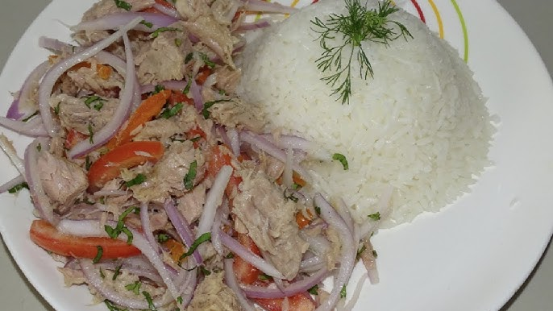

Home
Tuna Salad

Description
Ecuadorian tuna salad is a light, refreshing, and nutritious dish often served
during warm days or as a quick lunch. It combines canned tuna with fresh
vegetables and a simple citrus dressing, offering a balance of protein and
vibrant flavors. It's commonly enjoyed with rice, avocado, or crispy green
plantains (patacones), making it a versatile and satisfying meal.
Ingredients
- 2 cans of tuna (in water or oil, drained)
- 1 small red onion, thinly sliced
- 2 medium tomatoes, diced
- 1 cucumber, peeled and chopped
- 1 bell pepper (any color), chopped
- Juice of 2 limes or 1 lemon
- 2 tablespoons extra virgin olive oil
- Fresh cilantro, chopped (optional)
- Salt and pepper to taste
- Cooked white rice, lettuce, or patacones for serving (optional)
Steps
- In a large bowl, combine the tuna, onion, tomato, cucumber, and bell pepper.
- In a small bowl, whisk together lime juice, olive oil, salt, and pepper.
- Pour the dressing over the tuna and vegetables. Mix gently to combine.
- Taste and adjust seasoning as needed.
- Let it chill in the fridge for 15-30 minutes for better flavor.
- Serve over lettuce, with rice, or alongside patacones.